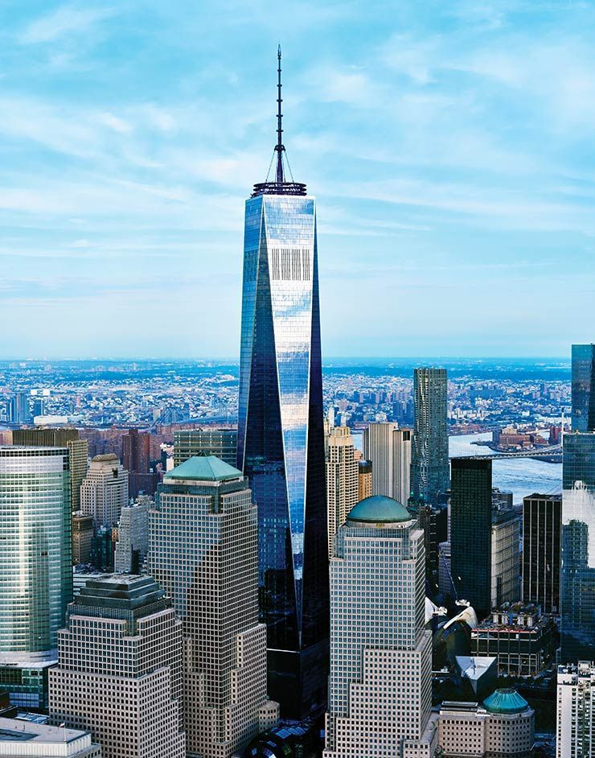
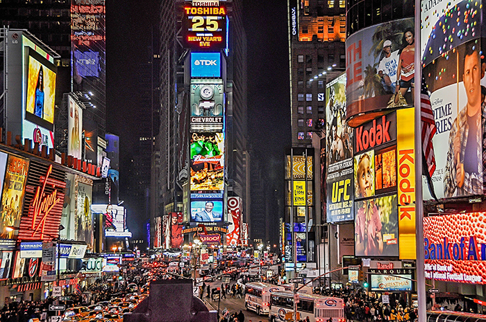
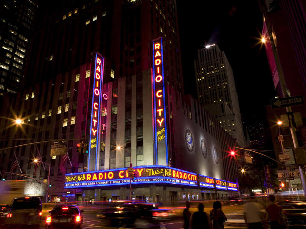

Bem-vindo aos meus mapas.
Conheça um lugar que gostei de conhecer e aprecie outras 2 sugestões de amigos.
Renato Machado

Os elevadores SkyPod sobem 102 andares em 47 segundos.
Este passeio surpreendente revela a transformação da cidade de Nova York de terras instáveis para a notável floresta de arranha-céus de hoje.
One World Trade Center também é conhecido como a Freedom Tower.
Reginaldo Gaio

Times Square é a denominação da área formada na confluência e cruzamento de duas grandes avenidas da cidade de Nova Iorque, Estados Unidos; podendo ser definida como uma grande praça ou largo, composta por vários cruzamentos e esquinas.
Caio Barra

O Radio City Music Hall é uma casa de espectáculos localizado no Rockefeller Center de Nova Iorque.
Conhecido como o Local de Espectáculos da Nação, o Radio City Music Hall abriu ao público a 27 de Dezembro de 1932.